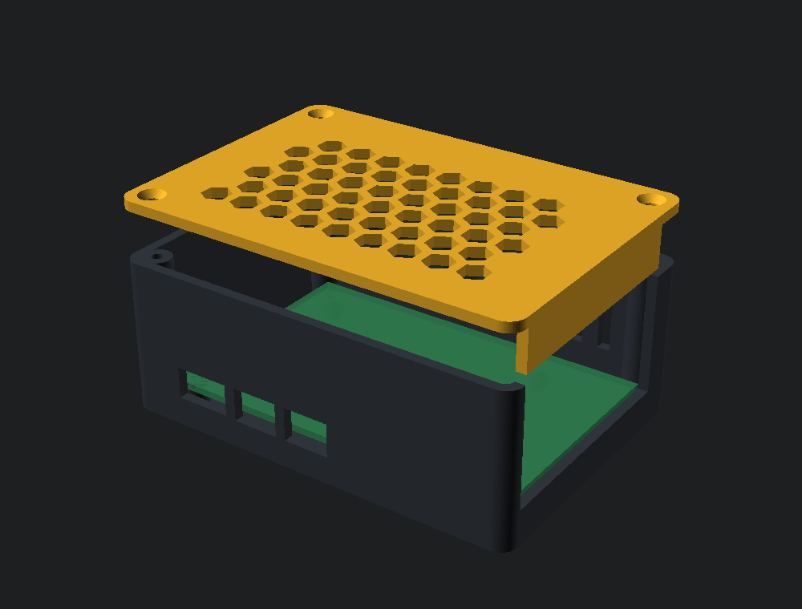
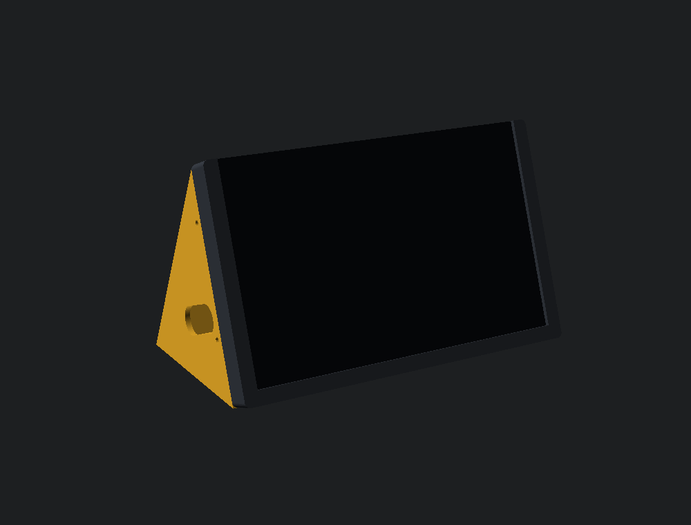
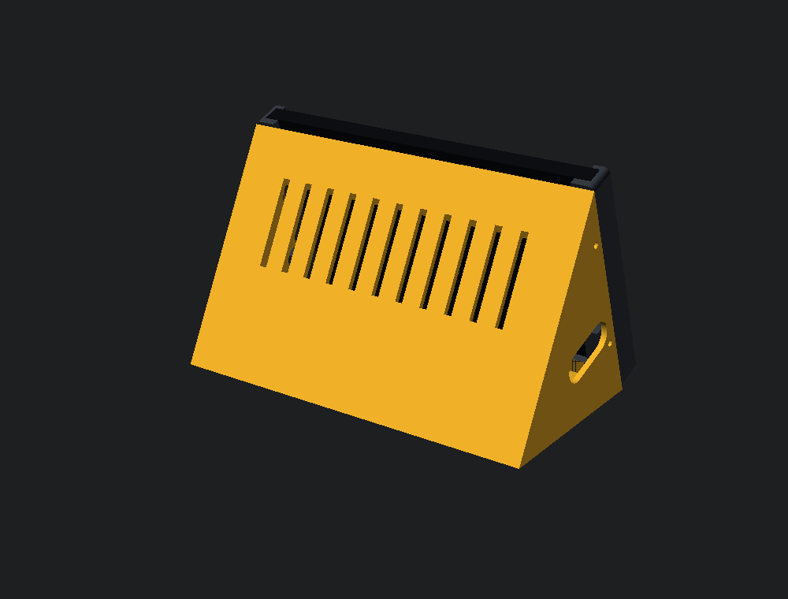
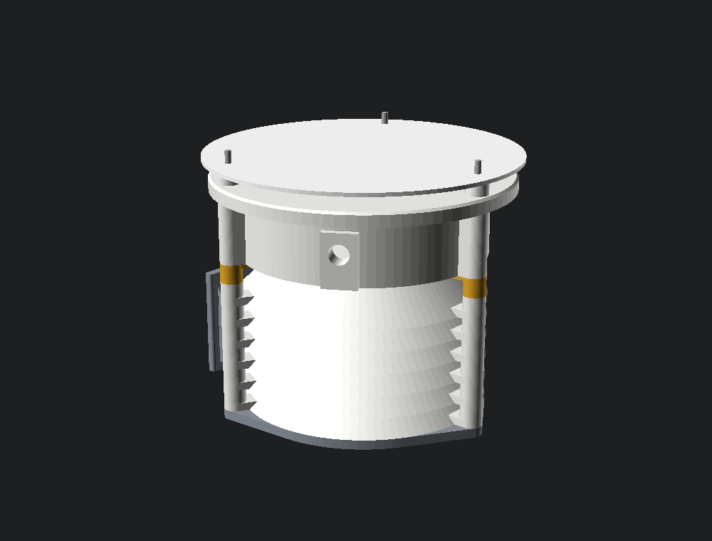
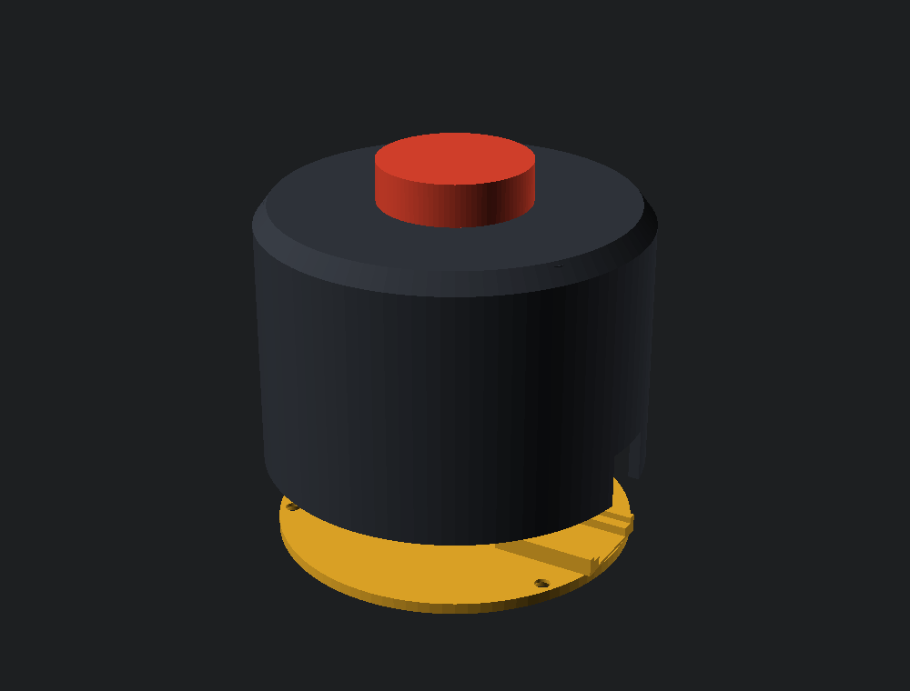
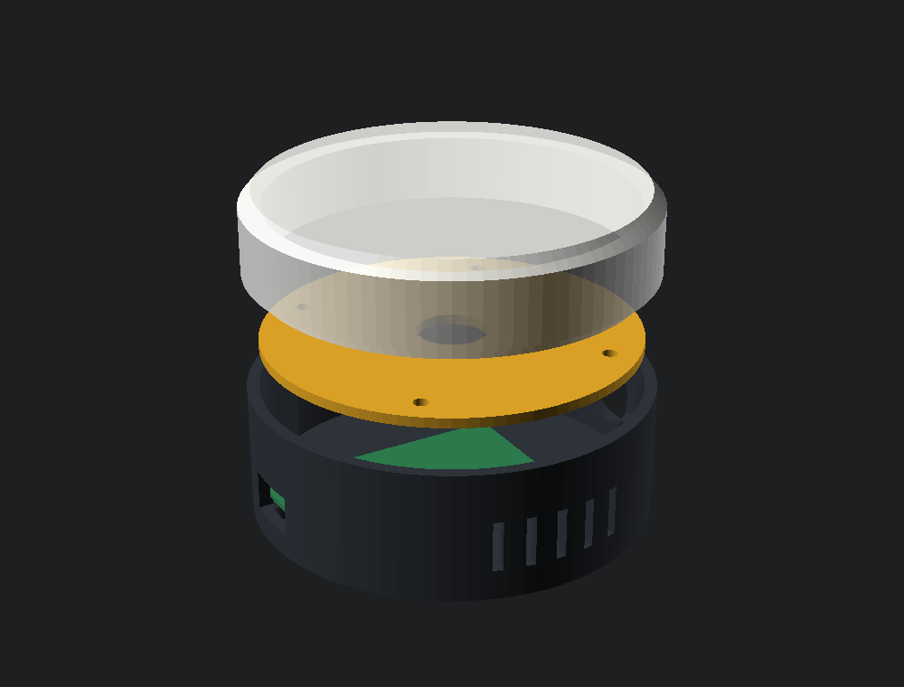

Five boards on your home Wi-Fi, one job each. A Pi 5 runs everything, a second Pi 5 with the touchscreen is where you talk to it, a Pi 3 with the Sense HAT reports the weather from outside, the ESP32-S3 is the dinner button in the kitchen, and the Pico 2 W is a light that tells you dinner is ready when you are away from the screen.
Every device talks only to CORE. Nothing talks sideways, so any one node can be unplugged without breaking the others.
| Node | Board | Where | Job | Software | Power |
|---|---|---|---|---|---|
| CORE | Raspberry Pi 5, Active Cooler, NVMe SSD | Near the router | Message broker, rules, voice processing, stores weather history, serves the dashboard | Pi OS Lite, Docker: Mosquitto, Python brain, faster-whisper, Piper | Official 27 W USB-C |
| CONSOLE | Raspberry Pi 5 + 7" touchscreen | Your desk | Main input: touch dashboard, wake word, microphone, speaker | Pi OS, Chromium in kiosk mode, openWakeWord | Official 27 W USB-C |
| OUTPOST | Raspberry Pi 3 + Sense HAT | Outside, north-facing wall | Temperature, humidity, pressure once a minute | Pi OS Lite, Python + sense-hat | 5 V 2.5 A micro-USB (see sheet 4) |
| DINNER BELL | Seeed XIAO ESP32-S3 Sense | Kitchen | Button press announces dinner; its light shows when you have answered | Arduino or MicroPython, MQTT client | Any USB-C charger |
| BEACON | Raspberry Pi Pico 2 W | Wherever you are when not at the desk | Glows and chimes for dinner; button replies "on my way" | MicroPython, umqtt | Any micro-USB charger |
You did not give the Pico 2 W a job, so I gave it one: the second half of the dinner button. If you would rather use it for something else, the rest of the design does not depend on it.
The button's own light closes the loop: whoever is cooking can see that you got the message without shouting up the stairs.
| MQTT topic | From | To | Payload |
|---|---|---|---|
| jarvis/outpost/weather | OUTPOST | CORE | {"temp_c":8.4,"humidity":71,"pressure_hpa":1009.2} |
| jarvis/kitchen/dinner | DINNER BELL | CORE | pressed |
| jarvis/kitchen/led | CORE | DINNER BELL | off | blink | solid |
| jarvis/beacon/alert | CORE | BEACON | dinner | clear |
| jarvis/beacon/ack | BEACON | CORE | pressed |
| jarvis/console/say | CORE | CONSOLE | text to speak and show |
| jarvis/+/status | every node | CORE | online | offline (last-will, so CORE knows when a node drops) |
All five are modelled, parametric, and exported as print-ready STL files in jarvis/cases/. Charcoal bodies with amber accents indoors; white outdoors to reflect heat.

97 × 68 × 39 mm. Tall enough for the Active Cooler with an M.2 HAT+ and SSD on top. Hex-vent lid over the fan, intake slots on the GPIO side, three M3 screws.
2 parts · PETG · no supports

The screen slides into the frame from the top and leans back 20°. A lip holds it on three sides, so no screws go into the display.
frame · PETG · supports under the back ledge

The wedge hides the Pi 5 bolted to the back of the screen and is also the foot. Cable ports on both sides, exhaust slots on top, four M3 screws from the sides.
shroud · PETG · no supports

200 mm across, 165 mm tall. Sealed drum for the Pi on top, louvred sensor shield below, double roof. Sheet 4 explains the section.
11 printed parts · white ASA or PETG

84 mm puck, 58 mm tall, heavy enough to stay put when hit. Lit 30 mm arcade button on top, USB-C at the back, three small holes for the board's microphone.
2 parts · PETG · no supports

80 mm puck. The translucent cap has a 1 mm top that diffuses the LED ring into one even glow. Button on the side, buzzer slots at the back.
3 parts · cap in natural or white PETG
| File | Parts to print | Orientation | Bed needed |
|---|---|---|---|
| core_server_case | base, lid | As exported (lid flat side down) | 100 × 70 |
| console_stand | frame, shroud | Frame front-face down; shroud open-face down | 200 × 125 |
| weather_station | base, louvre ×6, spider, drum, lid, sunshade | As exported. Louvres wide side down | 205 × 200 |
| kitchen_button | body, base | Body top-down | 85 × 85 |
| beacon_pico | cup, plate, cap | Cap top-down | 80 × 80 |
The models are built from published board dimensions and every part passes a solid-mesh check, but nothing has been test-fitted on real hardware. Print the first 4 mm of each base as a fit test before committing to the full part. The console stand assumes the official Raspberry Pi Touch Display 2 (7"): if your screen is different, change disp_w, disp_h and disp_t at the top of the file.
A sealed box protects electronics but ruins weather readings: the sensors would measure the Pi's own heat and trapped air. So the station has two chambers. The Pi lives sealed in the drum. The Sense HAT hangs below it in a louvred shield, in moving outside air but out of sun and rain, joined by a ribbon cable.
The two Pi 5s and the Pi 3 need no soldering. Only the button and the beacon have loose wires.
| Node | Connection | Detail |
|---|---|---|
| DINNER BELL | D1 (GPIO 2) → switch → GND | Input with pull-up. Pressed reads low. |
| DINNER BELL | D2 (GPIO 3) → button LED + ; LED − → GND | If the button's LED has no built-in resistor, add 100 Ω in series. |
| BEACON | VBUS (pin 40) → ring 5 V ; GND (pin 38) → ring GND | Cap brightness at about 40% in code so 12 LEDs stay under 300 mA. |
| BEACON | GP2 (pin 4) → 330 Ω → ring DIN | If the ring flickers, add a 74AHCT125 level shifter. |
| BEACON | GP15 (pin 20) → piezo + ; GP14 (pin 19) → button → GND | Passive piezo so the chime can have notes. |
| OUTPOST | Pi 3 header ⇄ Sense HAT | 20 cm 40-way GPIO extension ribbon, male to female. |
| CONSOLE | Pi 5 ⇄ screen | DSI ribbon and power lead supplied with the display; USB speakerphone for mic and speaker. |
| CORE | Pi 5 ⇄ M.2 HAT+ | PCIe ribbon supplied with the HAT. Ethernet to the router if you can. |
Beyond the five boards and the Sense HAT you already have.
| For | Item | Qty |
|---|---|---|
| CORE | Pi 5 Active Cooler; M.2 HAT+ with a 256 GB NVMe SSD (2230 or 2242); 27 W USB-C supply; Ethernet cable | 1 each |
| CONSOLE | 7" touchscreen (Touch Display 2 assumed); Active Cooler; 27 W USB-C supply; USB speakerphone or USB mic + small speaker; microSD 32 GB | 1 each |
| OUTPOST | M4 threaded rod 180 mm; M4 nuts, washers, wing nuts | 3 rods, 12 nuts, 3 wing nuts |
| OUTPOST | PG7 cable gland; M12 breather vent plug; 2.5 mm silicone O-ring cord (0.5 m); neutral-cure silicone sealant | 1 each |
| OUTPOST | 40-way GPIO extension ribbon, male to female, 20 cm; M2.5 × 15 mm standoffs and screws; conformal coating spray; stainless insect mesh; silica gel; microSD 16 GB | 1 set |
| OUTPOST | Outdoor-rated power: 5 V 2.5 A supply with 18 AWG micro-USB cable, or 12 V supply + 12 V to 5 V 3 A buck converter | 1 |
| DINNER BELL | 30 mm arcade button with LED; USB-C cable and charger | 1 each |
| BEACON | 12-LED RGB ring (WS2812, about 37 mm); passive piezo buzzer; 16 mm momentary push button; 330 Ω resistor; micro-USB cable and charger | 1 each |
| Cases | M2.5 × 6 self-tapping screws (Pi mounts); M3 × 8 self-tapping screws (lids, stand); M2 × 5 screws (Pico); 8 mm rubber feet | 12 / 10 / 4 / 8 |
| Filament | Charcoal PETG, amber PETG, natural PETG (beacon cap), white ASA or PETG (station: about 1 kg) | about 2 kg total |
Each step gives you something that works before you start the next.